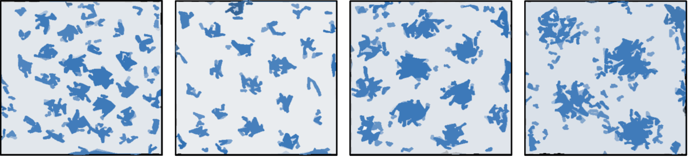
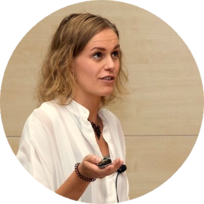

About
During behaviour, medial entorhinal grid cells express regular and predictable firing patterns, thought to support self-localisation and navigation. Recent advances suggest grid cells’ representation of space may generalise to non-spatial domains and, as such, may provide a model mechanism for organising conceptual knowledge. This meeting will bring together experimentalists and theoreticians to discuss this hypothesis.
Details
Date
Registration costs
Location
Speakers
Elizabeth Buffalo
Neil Burgess
Guifen Chen
Jozsef Csicsvari
Dori Derdikman
Christian Doeller
Ila Fiete
Kiah Hardcastle
Michael Hasselmo
Andreas Herz
Kate Jeffery
Julija Krupic
Dharshan Kumaran
Edvard Moser
Ida Momennejad
John O'Keefe
Francesca Sargolini
Nicolas Schuck
Kim Stachenfeld
Chantal Stern
David Tank
Nachum Ulanovsky
University of Washington
UCL
UCL
IST Austria
Technion – Israel Institute of Technology
NTNU
UT Austin
Stanford University
Boston University
UCL
LMU Munich
University of Cambridge
Deepmind
NTNU
Princeton University
UCL
Aix-Marseille University
MPI for Human Development Berlin
Deepmind
Boston University
Princeton University
Weizmann Institute
Sessions
Grid Cells for Space
Grid Cells beyond Self-Location
Theoretical Models of Grid Cell Function
Grid Cells beyond Space
Registration
Opening soon.
Organising Team
Dr. Caswell Barry
UCL
Prof. Tim Behrens
University of Oxford
UCL

Dr. Freyja Olafsdottir
UCL
Dr. Mona Garvert
University of Oxford
Sponsors